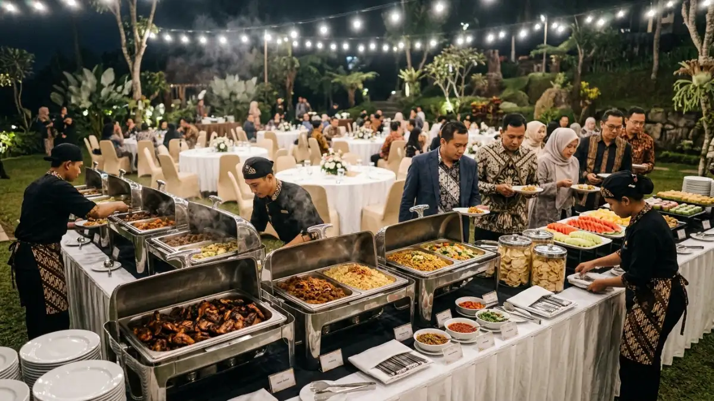

Rincian komponen harga menjadi kunci agar panitia tidak terkejut
dengan biaya tambahan. (Ilustrasi)
Rincian komponen harga menjadi kunci agar panitia tidak terkejut
dengan biaya tambahan. (Ilustrasi)
Harga paket gala dinner outdoor Batu dipengaruhi oleh katering, venue, dan dekorasi. Memahami rincian komponen ini mencegah panitia dari biaya tersembunyi.
- Komponen terbesar dalam harga paket adalah katering, diikuti oleh dekorasi dan venue.
- Penyedia layanan menghitung harga berdasarkan sistem per pax atau sistem borongan.
- Perbandingan penawaran harus dilakukan secara setara (apple-to-apple), bukan hanya dari harga total di baris paling bawah.
- Biaya yang sering terlewat adalah charge listrik venue dan ongkos pasang tenda tambahan.
- Cara paling efektif berhemat adalah dengan mengurangi kerumitan dekorasi, bukan memotong porsi katering.
DAFTAR ISI
- 1. Berapa Kisaran Harga Paket Gala Dinner Outdoor Batu?
- 2. Apa Saja Komponen yang Membentuk Harga Paket?
- 3. Mengapa Harga Antarpenyedia Bisa Berbeda Jauh?
- 4. Bagaimana Cara Membandingkan Penawaran Paket Secara Adil?
- 5. Biaya Tambahan Apa yang Sering Tidak Terduga?
- 6. Bagaimana Cara Menghemat Anggaran Tanpa Menurunkan Kualitas?
- 7. Kesimpulan
1. Berapa Kisaran Harga Paket Gala Dinner Outdoor Batu?
Harga paket gala dinner outdoor Batu umumnya dihitung berdasarkan sistem per pax (per peserta) dengan batas minimum pemesanan yang ditentukan penyedia.
Batas minimum ini bervariasi, biasanya berkisar antara 50 hingga 100 orang. Bila peserta kurang dari batas tersebut, harga per orang akan lebih tinggi untuk menutupi biaya operasional yang bersifat tetap, seperti panggung dan tata suara.
Harga tidak dapat dipukul rata karena sangat bergantung pada kualitas venue, variasi katering, dan detail dekorasi. Beberapa venue mengenakan biaya sewa murni, sementara yang lain menerapkan minimum konsumsi.
Bila disatukan dengan akomodasi dan agenda tim, gala dinner menjadi bagian dari struktur yang lebih besar. Untuk rincian mengenai anggaran acara secara keseluruhan, silakan rujuk pada panduan biaya dan anggaran meeting glamping di Batu.
2. Apa Saja Komponen yang Membentuk Harga Paket?
Struktur harga paket gala dinner outdoor terbangun dari komponen utama dan komponen pendukung. Katering merupakan komponen penyerap anggaran terbesar, rata-rata mencapai 40% hingga 50% dari total biaya.
- Katering (F&B). Mencakup menu pembuka, menu utama, penutup, dan minuman (kopi, teh, jus). Harga naik bila terdapat gubuk makanan tambahan atau menu premium seperti daging bakar (barbecue).
- Venue dan fasilitas area. Biaya sewa lokasi, keamanan, petugas kebersihan, ketersediaan meja kursi, serta izin lingkungan bila dibutuhkan.
- Dekorasi dan pencahayaan. Pembuatan panggung panggung, dekorasi tema (backdrop, bunga meja), tata lampu, dan lampu estetik (string lights) yang mutlak diperlukan di area outdoor.
- Tata suara (Sound system). Penyewaan speaker, mixer, mikrofon, dan teknisi lapangan. Acara dengan band lengkap membutuhkan tata suara yang berbeda dibanding acara yang sekadar memakai musik latar.
- Hiburan dan personel. Biaya untuk Master of Ceremony (MC), penyanyi, band, atau hiburan spesifik lainnya.
- Logistik dan manajemen. Ongkos angkut barang ke lokasi dan fee event organizer yang mengatur berjalannya acara.

Katering umumnya menyerap 40% hingga 50% dari total anggaran, menjadikannya komponen paling menentukan dalam harga paket. (Ilustrasi)3. Mengapa Harga Antarpenyedia Bisa Berbeda Jauh?
Perbedaan harga antarpenyedia bersumber dari kualitas bahan, reputasi lokasi, skala acara, dan tingkat kepastian layanan.
Penyedia yang satu mungkin menggunakan meja kursi banquet standar, sementara yang lain menawarkan kursi tiffany atau crossback yang harga sewanya lebih tinggi.
Dari sisi katering, satu vendor mungkin menyajikan tiga macam lauk, sementara vendor lain menyajikan lima lauk dengan porsi yang lebih terjamin dan layanan pramusaji yang responsif.
Faktor lain adalah legalitas dan keandalan. Vendor berbadan hukum yang memiliki prosedur standar dan rencana cadangan hujan (tenda atau area indoor) umumnya menetapkan harga yang mencerminkan risiko yang mereka tanggung.
4. Bagaimana Cara Membandingkan Penawaran Paket Secara Adil?
Panitia tidak disarankan hanya melihat angka akhir di proposal. Penawaran harus dibongkar dan dibandingkan secara setara (apple-to-apple).
- Buat tabel komparasi. Masukkan penawaran dari vendor A dan vendor B dalam kolom yang bersebelahan, lalu pecah berdasarkan kategori: venue, makanan, dekorasi, dan hiburan.
- Periksa rincian porsi makanan. Pastikan keterangan porsi dicantumkan. Misalnya, apakah lauk daging diperuntukkan bagi 100% tamu atau hanya dihitung 70%.
- Bandingkan spesifikasi teknis. Sound system 3.000 watt tentu berbeda harga dan kualitas suaranya dengan 5.000 watt. Demikian pula dengan ukuran tenda.
- Cek inklusi dan eksklusi. Vendor A mungkin tampak murah karena belum memasukkan pajak atau ongkos bongkar muat.
5. Biaya Tambahan Apa yang Sering Tidak Terduga?
Panitia yang belum berpengalaman menggelar acara outdoor sering melewatkan biaya tambahan yang tidak tercantum secara langsung di halaman depan proposal.
Biaya ini antara lain charge listrik atau sewa genset. Banyak venue membatasi penggunaan listrik dan meminta biaya tambahan bila vendor membawa alat yang menyedot daya besar.
Biaya lain adalah tenda cadangan. Jika hujan, siapa yang menanggung tenda darurat? Tanyakan ini di awal.
Terdapat pula kemungkinan biaya tambahan yang berkaitan dengan makanan. Apabila panitia membawa minuman dari sumber eksternal, beberapa venue berpotensi membebankan corkage fee per botol. Di samping itu, kelebihan durasi waktu acara (overtime) juga dapat menimbulkan tambahan biaya sewa serta upah bagi personel lapangan.
6. Bagaimana Cara Menghemat Anggaran Tanpa Menurunkan Kualitas?
Anggaran gala dinner outdoor dapat ditekan dengan cara menyesuaikan komponen sekunder tanpa menyentuh komponen primer yang menentukan kenyamanan tamu.
Hal pertama yang tidak boleh dikurangi adalah jumlah makanan. Tamu mungkin lupa pada dekorasi, tetapi mereka akan ingat bila mereka kehabisan makanan.
Untuk menghemat, gunakan dekorasi yang tidak rumit. Lokasi outdoor biasanya sudah memiliki latar alam. Fokuskan anggaran pada pencahayaan meja dan panggung, bukan pada dinding bunga palsu yang mahal.
Pilih hiburan lokal. MC atau band yang berdomisili di Batu dan Malang tidak memerlukan biaya penginapan atau tiket pesawat.
Hindari waktu puncak. Pemesanan pada hari kerja atau di luar musim libur sekolah (low season) memberi ruang negosiasi harga venue yang lebih lapang.
7. Kesimpulan
Harga paket gala dinner outdoor Batu bergantung pada katering, venue, dan perlengkapan teknis. Panitia perlu mencermati rincian, membandingkan secara komprehensif, dan mengidentifikasi potensi biaya tersembunyi sejak awal.
Anggaran dapat diatur agar lebih efisien dengan menyederhanakan elemen sekunder seperti dekorasi panggung yang terlampau meriah, namun tetap mempertahankan alokasi yang cukup untuk makanan dan kualitas tata suara.